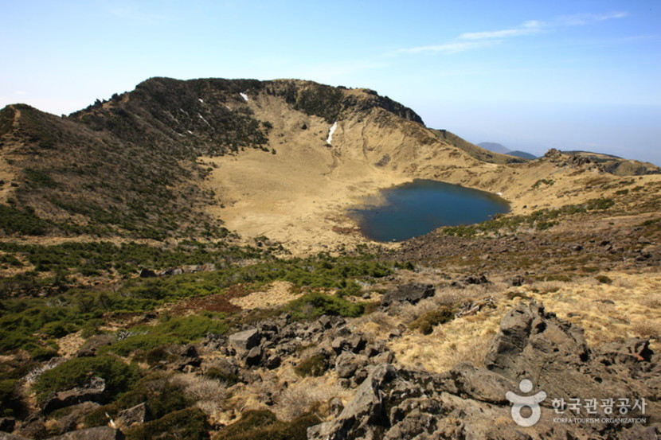

한라산 성판악 코스
한라산 동쪽코스인 성판악탐방로는 관음사탐방로와 더불어 한라산 정상인 백록담 을 오를 수 있는 탐방로이다. 한라산 탐방로 중에는 가장 긴 9.6㎞이며, 편도 4시간 30분이 소요된다. 성판악관리사무실(해발750m)에서 출발하여 속밭, 사라오름입구, 진달래밭대피소를 지나 정상까지는 대체적으로 완만한 경사를 이루어 큰 무리는 없으나 왕복 19.2km를 걸어야 하기 때문에 체력안배에 많은 신경을 써야 한다. 하산은 관음사 코스로도 가능하다. 또한 탐방로 5.8km지점에 사라오름으로 향하는 길을 따라 600m를 오르면 산정호수와 한라산의 아름다운 경관을 감상할 수 있는 사라오름전망대가 있다. 이 탐방로의 특징은 백록담 정상을 제외하고는 대부분 숲으로 형성되어 있어 삼림욕을 즐기며 탐방하기에 최적의 장소이다. 탐방로에서 보이는 오름군락은 화산섬의 신비감을 그대로 전달해준다. 한라산 자생지인 구상나무 숲이 가장 넓게 형성된 곳이며 한라장구채 큰오색딱따구리 오소리 노루 등의 한라산 동·식물을 관찰할 수 있다. 주의 할 것은 여름철 말벌에 쏘이지 않도록 각별히 유념함은 물론 하산 시 다리골절이나 체력소모로 인한 탈진 등의 안전사고가 발생될 수 있으므로 그룹탐방을 하는 것이 좋다.
고우니 제주를담다
제주 제주시 애월읍 애월해안로 857
제주신화월드 랜딩
제주 제주시 애월읍 애월해안로 857